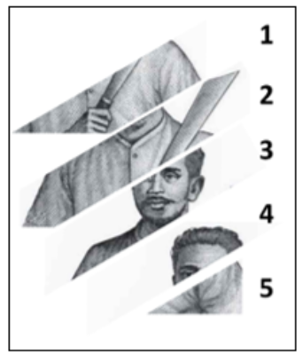
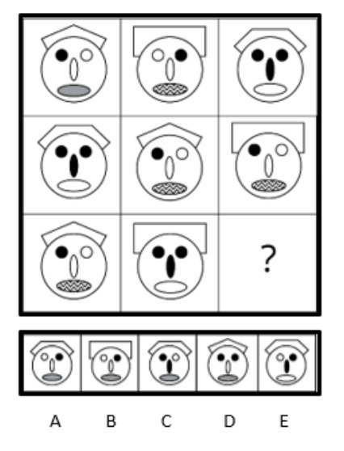

- Pilihlah dua kata yang memiliki makna yang sama!
- KEBERANIAN
- KETAKUTAN
- KEBERANJAKAN
- NYALI
- KEPERCAYAAN
- Pilihlah dua kata yang memiliki makna yang sama!
- BABAT
- BABAD
- TERAS
- CABANG
- EJEK
- Pilihlah dua kata yang memiliki makna yang sama!
- PERWIRA
- TAKUT
- JENDERAL
- KAPTEN
- PAHLAWAN
- Pilihlah dua kata yang memiliki makna yang sama!
- CURANG
- JUJUR
- ANDAL
- TERPERCAYA
- NAIF
- Pilihlah dua kata yang memiliki makna yang sama!
- CARI MUKA
- GAYA
- LUPA DIRI
- KETERLALUAN
- CAMUK
- Pilihlah dua kata yang memiliki makna yang sama!
- DISKREPANSI
- PERSATUAN
- SEPAKAT
- PERBEDAAN
- PENURUNAN
- Pilihlah dua kata yang memiliki makna yang sama!
- AMAT
- BINGIT
- SUKA
- BENCI
- KECIL
- Pilihlah dua kata yang memiliki makna yang sama!
- PENEGASAN
- AFIRMASI
- OBAT
- GALAK
- PENDEWASAAN
- Pilihlah dua kata yang memiliki makna berlawanan!
- LENTUR
- BENTUR
- BAKU
- LUWES
- PLASTIS
- Pilihlah dua kata yang memiliki makna berlawanan!
- NYATA
- AYAL
- MELESAT
- CEPAT
- SETUJU
- Pilihlah dua kata yang memiliki makna berlawanan!
- MAKMUR
- SUBUR
- GEMUK
- KURANG
- MANDUL
- Pilihlah dua kata yang memiliki makna berlawanan!
- ANGKUH
- INDEPENDEN
- SABAR
- RENDAH HATI
- SETIA
- Pilihlah dua kata yang memiliki makna berlawanan!
- PINTAR
- CERDAS
- BAKA
- PEDIH
- FANA
- Pilihlah dua kata yang memiliki makna berlawanan!
- CICIL
- KONSTAN
- PERLAHAN
- BERUBAH
- LAMBAT
- Pilihlah dua kata yang memiliki makna berlawanan!
- JELEK
- SADAP
- CAKAP
- CEROBOH
- AHLI
- Pilihlah dua kata yang memiliki makna berlawanan!
- DERMAWAN
- KIKIR
- ALIM
- KAYA
- BERSAHAJA
- DKI JAKARTA : ... SUMATERA UTARA : …
- KERAK TELOR
- BIKA AMBON
- SIOMAY
- PEMPEK
- RENDANG
- ARSITEK : ... INSINYUR : …
- MESIN
- JALAN
- REKAYASA
- BANGUNAN
- KIMIA
- ... : LAUT GAJAH : …
- AIR
- DINGIN
- HUTAN
- RUMPUT
- KERANG
- ... : MALAS … : BODOH
- AKTIF
- CEKATAN
- CERDIK
- GENIAL
- CERDAS
- ... : NALURI INSPIRASI : …
- ALAMI
- INSTRUKSI
- ORGANIK
- INSTING
- ILHAM
- RINGAN : BERAT … : …
- TEBAL
- SEMPIT
- PANJANG
- TINGGI
- PENDEK
- PENYAKIT : … MANUSIA : …
- PATOLOGI
- PSIKOLOGI
- ANTROPOLOGI
- DENDROLOGI
- BIOLOGI
- SAPI : RENDANG … : ...
- AYAM
- BROWNIES
- IKAN
- GARANG ASEM
- PAPEDA
- PENARI : PANGGUNG … : ...
- MUSISI
- PEMERAN
- TEATER
- BUKU
- TELEVISI
- Pilihlah satu kata yang memiliki makna yang paling jauh dari 4 kata lainnya!
- AS
- JACK
- UNO
- QUEEN
- KING
- Pilihlah satu kata yang memiliki makna yang paling jauh dari 4 kata lainnya!
- SUMATERA BARAT
- SUMATERA TIMUR
- SUMATERA UTARA
- SUMATERA SELATAN
- LAMPUNG
- Pilihlah satu kata yang memiliki makna yang paling jauh dari 4 kata lainnya!
- BESAR
- AGUNG
- MAHA
- AKBAR
- ADI
- Pilihlah satu kata yang memiliki makna yang paling jauh dari 4 kata lainnya!
- RENDANG
- RAWON
- EMPAL
- PEMPEK
- ABON SAPI
- Pilihlah satu kata yang memiliki makna yang paling jauh dari 4 kata lainnya!
- SOEKARNO
- SOEHARTO
- MUHAMMAD HATTA
- HABIBIE
- SUSILO BAMBANG YUDHOYONO
- Pilihlah satu kata yang memiliki makna yang paling jauh dari 4 kata lainnya!
- GAGAP
- CERDAS
- PANDAI
- BODOH
- GENIUS
- Pilihlah satu kata yang memiliki makna yang paling jauh dari 4 kata lainnya!
- GITAR
- PIANO
- LAGU
- KAMERA
- DRUM
- Pilihlah satu kata yang memiliki makna yang paling jauh dari 4 kata lainnya!
- SUNGAI
- DANAU
- LAUT
- GUNUNG
- SAMUDERA
- Indra memiliki dua kali jumlah uang yang dimiliki oleh Prima. Jika total uang mereka berdua adalah Rp 90.000,00-, berapa uang yang dimiliki Indra?
- Rp 30.000,00
- Rp 45.000,00
- Rp 60.000,00
- Rp 75.000,00
- Rp 80.000,00
- Rendy membeli sebuah laptop seharga Rp 12.000.000,00. Jika laptop tersebut dikenakan pajak sebesar 10%, berapa total harga yang harus dibayar Rendy?
- Rp 12.600.000,00
- Rp 12.800.000,00
- Rp 13.200.000,00
- Rp 13.500.000,00
- Rp 13.800.000,00
- Perbandingan jumlah buku pelajaran Matematika dan Bahasa Inggris di Perpustakaan adalah 2 : 5. Jika jumlah total buku adalah 560 buku, berapa jumlah buku pelajaran Bahasa Inggris?
- 140
- 200
- 280
- 350
- 400
- Sebuah taman harus dibagi menjadi dua area dimana area pertama adalah 4/5 dari area kedua. Jika luas total taman adalah 900 m2, berapakah luas area yang lebih besar?
- 360 m2
- 400 m2
- 450 m2
- 500 m2
- 540 m2
- Sebuah kelas terdiri dari dua kelompok. Total jumlah siswa di kedua kelompok adalah 150 orang. Jika jumlah siswa di kelompok A lebih sedikit 30 orang dari kelompok B, berapakah jumlah siswa yang ada di kelompok B?
- 75
- 80
- 85
- 90
- 95
- Andi menggunakan dua per lima dari uangnya untuk membeli sepatu dan topi. Harga topi adalah tiga kali harga sepatu. Jika uang yang tersisa adalah Rp 600.000, berapakah harga sepatu?
- Rp 200.000,00
- Rp 240.000,00
- Rp 300.000,00
- Rp 320.000,00
- Rp 360.000,00
- Sebuah lapangan dapat ditata ulang oleh 8 pekerja dalam waktu 12 jam. Berapa waktu yang dibutuhkan oleh 4 pekerja untuk menyelesaikan tugas yang sama?
- 12 jam
- 16 jam
- 18 jam
- 20 jam
- 24 jam
- Seorang pilot helikopter melihat sebuah mobil di bawahnya yang berada di atas jalan tol layang. Jika ketinggian jalan tol adalah 100 meter dan ketinggian helikopter adalah 150 meter, berapakah jarak antara helikopter dan mobil?
- 50 meter
- 75 meter
- 100 meter
- 125 meter
- 150 meter
- 09:15
- 09:20
- 09:25
- 09:30
- 10:05
- Seorang pelari menyelesaikan sebuah lomba maraton sejauh 42 km dalam waktu 3,5 jam. Dia berlari dengan kecepatan 10 km/jam untuk 1/3 perjalanan dan kecepatan 15 km/jam untuk sisa perjalanan. Berapa lama waktu yang dia habiskan berlari dengan kecepatan 15km/jam?
- 1,5 jam
- 1,7 jam
- 2 jam
- 2,1 jam
- 2,25 jam
- Dua orang teman membeli buah-buahan di pasar. Andi membeli 3 kg apel dan 2 kg jeruk seharga Rp 60.000,00. Adit membeli 2 kg apel dan 4 kg jeruk seharga Rp 80.000,00. Berapakah harga 1 kg Apel?
- Rp 20.000,00
- Rp 15.000,00
- Rp 10.000,00
- Rp 25.000,00
- Rp 30.000,00
- Sebuah toko baju mendapat pengiriman 180 baju baru. Dari jumlah tersebut, 3/5 bagian dijual, 1/6 bagian diberikan kepada karyawan, dan sisanya disimpan lagi di gudang. Berapa jumlah baju yang disimpan di gudang?
- 24
- 36
- 42
- 54
- 60
- Maya bersepeda dari rumahnya ke Mitrasiswa dengan kecepatan rata-rata 15 km/jam. Jika jarak rumah ke mitrasiswa adalah 45 km, pada pukul berapa Maya akan sampai di mitrasiswa jika ia berangkat pukul 07.00?
- 09.00
- 08.00
- 09.30
- 08.30
- 10.00
- Budi membeli sebuah tanah seharga Rp 50.000.000.Dia mengeluarkan tambahan biaya sebesar Rp 10.000.000,00 untuk mebersihkan dan meratakan tanah. Setelah 5 tahun, Budi menjual tanah tersebut dengan harga Rp 90.000.000,00. Berapa persen keuntungan yang didapatkan Budi?
- 30%
- 40%
- 50%
- 60%
- 70%
- Dita ingin memasang iklan di media sosial dengan tarif Rp 50.000,00/hari untuk 4 hari pertama, Rp 35.000,00/hari untuk 3 hari berikutnya, dan Rp 20.000,00/hari untuk sisa hari. Jika Dita memiliki anggaran Rp 350.000,00, berapa lama iklannya dapat ditayangkan?
- 6 hari
- 7 hari
- 8 hari
- 9 hari
- 10 hari
- Sebuah proyek direncanakan akan selesai dalam 20 hari dengan 12 pekerja. Berapa banyak pekerja tambahan yang diperlukan untuk menyelesaikan proyek dalam 12 hari?
- 4 orang
- 6 orang
- 8 orang
- 10 orang
- 12 orang
- Uang Diana, Erika, dan Fitri memiliki perbandingan 2 : 3 : 5. Fitri memiliki Rp 150.000,00, berapakah total uang mereka?
- Rp 250.000,00
- Rp 300.000,00
- Rp 330.000,00
- Rp 400.000,00
- Rp 450.000,00
- 4 x 6 + 24 : 4 = …
- 24
- 14
- 18
- 20
- 30
- 48 : –6: -4 : 2 = …
- 1
- -1
- 2
- -2
- 4
- PILIHAN A
- PILIHAN B
- PILIHAN C
- PILIHAN D
- PILIHAN E
- 100 - 200 x 4 + 50 = ...
- 30
- 40
- 50
- 60
- 70
- 0,3 – 5 x 0,06 = …
- 0
- 0,12
- 0,15
- 0,18
- -0,12
- 5
- 8
- 10
- 12
- 15
- 2.0252 - 2.0242
- 3.009
- 3.049
- 3.879
- 4.049
- 4.229
- 40 - (0,2)2 -9 ÷ 0,3
- 9,6
- 9,96
- 12,16
- 13,04
- 15,2
- PILIHAN A
- PILIHAN B
- PILIHAN C
- PILIHAN D
- PILIHAN E
- 1,7 km + 200 dam + 7.000 cm = … m
- 1.790
- 2.790
- 3.270
- 3.770
- 4.
- 5 ha + 1.500 dm2 – 300 dam 2 + 2,5 hm2 = …
- 45,015 km2
- 450,15 hm2
- 4.501,5 dam2
- 45.015 m2
- 450.150 cm2
- Sebuah toko kain sepanjang 200 m. Pembeli pertama membeli kain sepanjang 2,5 dam. Pembeli kedua membeli kain sepanjang 5.000 cm, dan pembeli ketiga sepanjang 30 dm. Berapakah sisa panjang kain yang masih tersisa?
- 122 m
- 145 m
- 155 m
- 175 m
- 185 m
- 15 kL – 6.000 dm3 + 12.000 cc – 0,04 m3 = … kL
- 7,96
- 8,84
- 8,96
- 9,84
- 10,96
- 3 rim + 3 gross – 1,5 kodi – 5 lusin = …
- 1572 buah
- 1598 kg
- 1624 kg
- 1726 kg
- 1824 kg
- Seorang peternak memiliki 1/3 gross dan 4 kodi telur. Jika telur yang terjual 36 buah, maka berapa jumlah telur yang tersisa?
- 40
- 51
- 72
- 83
- 92
- Harun memiliki usaha kios sembako. Ia selalu menyisihkan sebagian keuntungannya untuk ditabung. Di bulan pertama Harun memiliki keuntungan Rp 2.500.000,00 dan 6 % uangnya ditabung. Pada bulan kedua Harun memiliki keuntungan Rp 3.000.000,00 dan 7 % uangnya ditabung. Pada bulan ketiga Harun memiliki keuntungan Rp 2.000.000,00 dan 9 % uangnya ditabung. Berapa banyaknya tabungan Harun saat ini?
- Rp 420.000,00
- Rp 480.000,00
- Rp 520.000,00
- Rp 540.000,00
- Rp 600.000,00
- 3 milenium + 4 abad – 50 windu = ... tahun
- 4
- 6
- 8
- 18
- 21
- Semua mahasiswa adalah pembelajar.
Sebagian mahasiswa adalah pengembang perangkat lunak.
Kesimpulan yang paling tepat adalah...
- Sebagian pembelajar adalah mahasiswa
- Sebagian pengembang perangkat lunak adalah pembelajar
- Semua pengembang perangkat lunak adalah mahasiswa/li>
- Sebagian mahasiswa bukan pelajar
- Sebagian mahasiswa bukan pengembang perangkat lunak
- Tidak ada film yang juga menjadi serial TV.
Beberapa acara adalah film.
Kesimpulan yang paling tepat adalah...
- Ada acara yang tidak menjadi serial TV
- Beberapa acara bukan film
- Tidak ada acara yang juga serial TV
- Beberapa serial TV bukan film
- Film hanya bisa menjadi film
- Setiap hari minggu Amir pergi ke pengajian.
Amir pergi ke pengajian jika libur sekolah.
Kesimpulan yang paling tepat adalah...
- Amir tidak pergi ke pengajian jika sekolah
- Setiap hari minggu Amir libur sekolah
- Amir pergi ke pengajian jika hari Minggu
- Setiap hari minggu Amir sekolah
- Amir tidak bisa ke pengajian setiap hari
- Semua koruptor adalah penjahat.
Semua koruptor harus ditangkap polisi.
Kesimpulan yang paling tepat adalah...
- Semua yang ditangkap polisi adalah koruptor
- Semua koruptor harus ditangkap polisi
- Semua yang ditangkap polisi bukan koruptor
- Beberapa yang ditangkap polisi adalah penjahat
- Beberapa yang ditangkap polisi adalah koruptor
- Semua murid bimbel yang lulus Ujian Akpol pasti melanjutkan Pendidikan Akpol.
Sebagian murid bimbel tidak lulus ujian.
Kesimpulan yang paling tepat adalah...
- Semua yang lulus ujian adalah murid bimbel
- Sebagian murid bimbel melanjutkan pendidikan akpol
- Sebagian siswa yang lulus ujian akpol tidak melanjutkan ujian Akpol
- Sebagian murid yang lulus ujian akpol tidak melanjutkan ke pendidikan Akpol
- Semua murid yang melanjutkan ke pendidikan Akpol adalah murid bimbel
- Jika Bento berbakti kepada ibunya, maka ibunya bahagia.
Jika ibunya bahagia, maka rezeki Bento lancar.
Rezeki Bento tidak lancarKesimpulan yang paling tepat adalah...
- Bento tidak berbakti kepada Ibunya
- Ibu Bento tidak bahagia
- Bento berbakti kepada Ibunya
- Ibunya Bento bahagia
- Ibunya Bento harus bahagia agar Bento kaya
- Sigit suka menonton pertandingan NBA, ia penggemar klub Chicago Bulls.
Tito teman baik Sigit, suka menonton pertandingan NBA.
Kesimpulan yang paling tepat adalah...
- Sigit dan Tito menonton pertandingan sepak bola bersama
- Sigit dan Tito penggemar klub Chicago Bulls
- Sigit dan Tito suka menonton pertandingan NBA
- Sigit dan Tito suka bermain basket
- Sigit dan Tito berteman baik
- Semua murid Bimbel menerima modul yang berisi materi untuk ujian.
Siska tidak menerima modul yang berisi materi untuk ujian.
Kesimpulan yang paling tepat adalah...
- Siska adalah murid bimbel
- Siska bukan murid bimbel
- Tidak semua murid bimbel menerima modul yang berisi materi untuk ujian
- ada murid bimbel yang tidak menerima modul yang berisi materi untuk ujian
- Modul yang berisi materi untuk ujian hanya untuk murid bimbel
- Semua penerima Bansos adalah warga miskin.
Semua warga miskin adalah orang yang penghasilannya di bawah 3.000.00,00 per bulan.
Anton adalah penerima Bansos.Kesimpulan yang paling tepat adalah...
- Anton bukan orang miskin
- Tidak ada orang miskin bernama Anton
- Anton memiliki penghasilan di bawah Rp 3.000.000,00 per bulan
- orang yang penghasilannya di bawah Rp 3.000.000,00 belum tentu bernama Anton
- Sebagian penerima bansos penghasilannya tidak di bawah Rp 3.000.000,00 per bulan
- Semua orang yang memiliki kendaraan bermotor memiliki STNK.
Semua orang yang memiliki STNK pernah pergi ke SAMSAT.
Kesimpulan yang paling tepat adalah...
- Tidak ada orang yang pernah pergi ke SAMSAT
- Semua orang yang memiliki STNK mungkin memiliki kendaraan bermotor
- Sebagian orang yang memiliki kendaraan bermotor pernah pergi ke SAMSAT
- Semua orang yang memiliki kendaraan bermotor pernah pergi ke SAMSAT
- Ada pemilik STNK yang memiliki kendaraan bermotor
- Jika ombak sedang tinggi maka kapal membatalkan pelayaran.
Jika malam tiba maka nelayan mencari ikan di laut.
Ombak sedang tinggi atau malam tiba.Kesimpulan yang paling tepat adalah...
- Kapal membatalkan pelayaran atau nelayan mencari ikan di laut
- Kapal membatalkan pelayaran ketika malam tiba
- nelayan mencari ikan di laut bukan saat ombak sedang tinggi
- nelayan mencari ikan saat ombak sedang tinggi
- Malam tiba hingga ombak meninggi
- Jika terjadi tindak kriminal maka harus membuat laporan kepada polisi.
Jika membuat laporan kepada polisi maka polisi akan segera bertindak.
Kesimpulan yang paling tepat adalah...
- Jika terjadi tindakan kriminal maka Polisi akan segera bertindak
- Jika membuat laporan kepada polisi maka polisi akan bertindak secepatnya
- Tidak ada orang yang membuat laporan kepada polisi
- Semua polisi akan bertindak jika ada kirminal
- Sebagian orang membuat laporan kepada polisi
- Jika kondisi awak kereta api sehat dan rangkaian kereta api bagus maka kereta api tiba di tujuan sesuai jadwal.
Jika kereta api tiba di tujuan sesuai jadwal, maka penumpang puas.
Jika penumpang puas, maka jumlah penumpang bus umum akan berkurang.
Jumlah penumpang bus umum bertambah banyak.
Kesimpulan yang paling tepat adalah...
- Penumpang keret api naik rangkaian kereta api yang bagus dan awak yang sehat, dan tiba di tujuan sesuai dengan jadwal
- Penumpang keret api naik rangkaian kereta api yang tidak bagus, tetapi awak kereta api yang sehat
- Penumpang keret api naik rangkaian kereta api yang bagus dengan awak kereta api yang tidak sehat
- Penumpang keret api naik rangkaian kereta api yang bagus dan awak yang sehat, dan tiba di tujuan tidak sesuai dengan jadwal
- Penumpang keret api naik rangkaian kereta api yang tidak bagus dan awak yanng tidak sehat dan tiba di tujuan tidak sesuai jadwal
- Dengan menggunakan sepeda motor, Fahri dapat menempuh perjalanan dari rumah ke sekolah dalam waktu 30 menit
Dari rumah menuju ke sekolah Fahri berjalan kaki.
Kesimpulan yang paling tepat adalah...
- Perjalanan Fahri kurang dari 30 menit
- Perjalanan Fahri selama 30 menit
- Perjalanan Fahri lebih dari 30 menit
- Perjalanan Fahri tidak lebih dan tidak kurang dari 15 menit
- Perjalanan Fahri 15 menit lebih lambat
- Setelah jam istirahat, siswa mengikuti pelajaran di kelas.
Emir makan di kantin sekolah pada jam istirahat.
Kesimpulan yang paling tepat adalah...
- Emir tidak mengikuti pelajaran setelah makan di kantin sekolah
- Emir mengikuti pelajaran dan makan di kantin sekolah
- Emir tidak mengikuti pelajaran karena makan di kantin sekolah
- Emir mengikuti pelajaran sebelum makan di kantin sekolah
- Emir mengikuti pelajaran setelah makan di kantin sekolah
- Semua siswa hadir di sekolah pada acara penerimaan siswa baru.
Acara penerimaan siswa baru dilakukan pada hari kamis.
Kesimpulan yang paling tepat adalah...
- Semua siswa baru tidak hadir di hari Kamis
- Semua siswa tidak hadir di hari Kamis
- Semua siswa hadir di hari Kamis
- Tidak semua siswa hadir di hari Kamis
- Semua siswa lama tidak hadir di hari kamis
- Semua bus eksekutif dilengkapi toilet.
Televisi hanya pada bus Harapan Jaya.
Kesimpulan yang paling tepat adalah...
- Bus eksekutif dilengkapi televisi tanpa toilet
- Bus eksekutif dilengkapi toilet tanpa televisi
- Bus eksekutif tidak dilengkapi toilet tanpa televisi
- Bus eksekutif dilengkapi sama dengan bus eksekutif lain
- Bus eksekutif Harapan Jaya dilengkapi toilet dan televisi
- 1-5-6-2-3-4-7-8
- 1-6-5-3-4-2-7-8
- 1-5-6-2-4-3-8-7
- 1-5-6-2-3-8-7-4
- 1-5-6-2-3-4-8-7
- 4-6-7-1-5-2-8-3
- 4-1-6-7-8-5-2-3
- 4-1-6-2-7-8-5-3
- 4-7-1-6-2-8-5-3
- 4-1-6-7-2-8-5-3
- 2-5-1-4-7-6-3
- 2-5-4-1-6-7-3
- 2-1-5-4-7-6-3
- 2-5-1-7-6-4-3
- 2-1-4-5-7-6-3
- 
- 3-1-2-5-4
- 4-3-1-2-5
- 4-3-2-1-5
- 4-1-3-2-5
- 4-3-1-2-5
- 3-1-4-2
- 3-2-4-1
- 4-2-1-3
- 4-1-3-2
- 4-3-1-2
- 2-5-6-1-3-4
- 2-3-5-6-1-4
- 2-1-3-5-6-4
- 2-6-5-3-1-4
- 2-6-5-1-3-4
- 4-5-7-6-2-1-3
- 4-3-1-6-2-7-5
- 4-3-2-5-1-7-6
- 4-1-3-7-2-6-5
- 4-6-1-3-5-2-7
- 1 – 2 – 5 – 3 – 4 – 6
- 1 – 4 – 2 – 3 – 5 – 6
- 1 – 5 – 4 – 2 – 3 – 6
- 1 – 5 – 2 – 3 – 4 – 6
- 1 – 5 – 2 – 4 – 3 – 6
- 4 – 1 – 3 – 5 – 2
- 4 – 1 – 5 – 3 – 2
- 4 – 2 – 3 – 1 – 5
- 4 – 3 – 2 – 1 – 5
- 4 – 5 – 3 – 1 – 2
- 3 – 1 – 4 – 2
- 3 – 2 – 4 – 1
- 4 – 3 – 2 – 1
- 4 – 1 – 3 – 2
- 4 – 3 – 1 – 2
- 1 – 2 – 3 – 4 – 5
- 3 – 1 – 4 – 2 – 5
- 2 – 3 – 1 – 4 – 5
- 3 – 1 – 2 – 4 – 5
- 3 – 4 – 5 – 1 –2
- PILIHAN A
- PILIHAN B
- PILIHAN C
- PILIHAN D
- PILIHAN E
- PILIHAN A
- PILIHAN B
- PILIHAN C
- PILIHAN D
- PILIHAN E
- 
- PILIHAN A
- PILIHAN B
- PILIHAN C
- PILIHAN D
- PILIHAN E

- PILIHAN A
- PILIHAN B
- PILIHAN C
- PILIHAN D
- PILIHAN E
- PILIHAN A
- PILIHAN B
- PILIHAN C
- PILIHAN D
- PILIHAN E